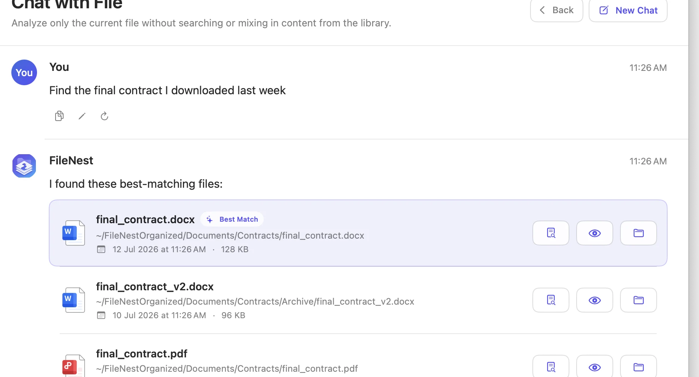
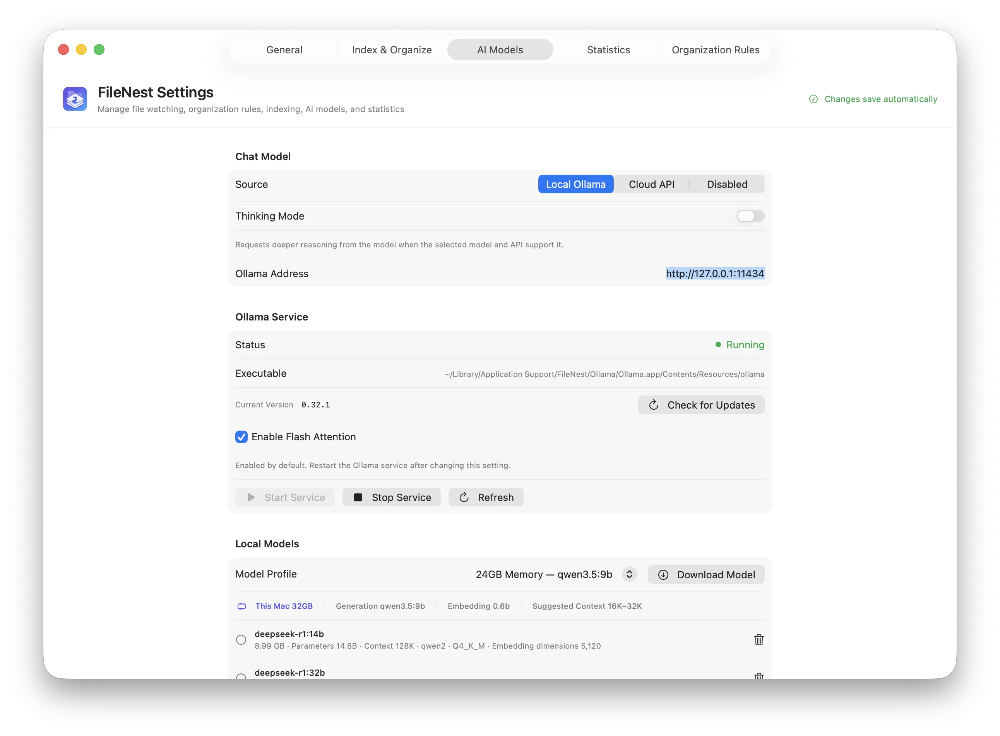

Index, search, and chat with the files already on your computer using local AI. In local mode, content, indexes, notes, and conversations stay on this device.
Support coverage during rolloutOwner: Leo Martin · Customer Success
Pricing page dependenciesOwner: Priya Shah · Growth
ShowingIndexing
Search by meaning
Names are optional. Context is enough.
Smart Search turns everyday language into keywords, dates, file types, and semantic intent. Hybrid retrieval brings the strongest signals together, then shows why a result matched.
Natural-language file search
Content, entity, keyword, and vector retrieval
Evidence-backed answers with file previews

WatchSelected folders only
UnderstandExtract, OCR, and index
OrganizeRules first, AI optional
Quiet automation
Organized before clutter becomes a project.
FileNest waits until downloads and project folders are stable, indexes before moving, and follows your ordered rules. Unmatched files can be classified by local AI, while installers and temporary files stay untouched.
Local models, explicit control
Run intelligence where your files already live.
FileNest manages local Ollama models and keeps chat, embeddings, and OCR independently configurable. Cloud providers remain optional and visible.
Local chatLocal embeddingsLocal OCR

Local-first is not a setting hidden in preferences.
Your computer is the boundary.
File metadata, extracted content, embeddings, notes, and conversations are stored on your device by default. Local models can handle search, OCR, and answers without uploading document content.
On this device
Your filesOriginals stay in your folders
→
Private indexChunks, notes, and vectors
→
Local AIOllama, OCR, and embeddings
Optional cloud providersUsed only when you configure them
Your choice
At home on your desktop.
One product model, shaped for the conventions of each operating system.
Native where it matters.
A SwiftUI app with menu bar presence, Finder integration, native previews, system appearance, and global quick search. macOS 13 and later.
Available now for macOS
Parity without impersonation.
A Windows 11 implementation with tray workflows, native shell actions, secure credential storage, and matching search, chat, indexing, and rules.
Public preview available for Windows
Open source, in the open
Inspect it. Improve it. Make FileNest yours.
FileNest is released under the MIT License. The macOS and Windows source, automated tests, issue tracker, and contribution guide are all public on GitHub.
Release installers are published as GitHub Release assets and are not committed to the source repository.
The practical questions.
Clear answers, before you trust an app with your files.
Does FileNest upload my files?
Not in local mode. File contents, indexes, notes, and conversations stay on your computer. If you explicitly configure a cloud model, only the requests for that provider are sent to its API.
What can FileNest understand?
It can extract text and structure from PDFs, Office documents, images, archives, project folders, and—when enabled—audio and video transcripts. OCR and parser fallbacks depend on your setup.
Will automatic organization move unfinished downloads?
FileNest checks that files and directories are stable before processing them. It also ignores locks, temporary downloads, installers, and unsupported items by default.
Can I use my own AI provider?
Yes. You can run compatible local models with Ollama or configure OpenAI-compatible and Anthropic cloud providers separately for chat, embeddings, and OCR.
Available for macOS and Windows
Make room for the work. Not the file hunt.
Download the notarized macOS app or get the Windows 11 installer from the public GitHub release.